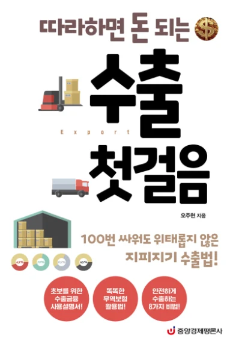

중소기업 수출컨설팅은 수출 실적이 전혀 없는 내수기업이나 소상공인도 받을 수 있나요?
네, 가능합니다. 수출 실적이 없는 내수기업과 소상공인도 KOTRA 내수기업 수출기업화 사업, 중기부 수출바우처(내수기업 트랙), 소상공인 수출 지원제도 등을 활용해 첫 수출을 시작할 수 있습니다. 리틀스타(Happy Oh)에서는 기업의 품목과 준비 단계에 맞춰 첫 수출 로드맵과 신청 가능한 지원사업을 1:1로 안내합니다.
수출자금조달을 위한 소진공, 중진공, 신보/기보, 지역 신보 등 정책자금 활용 전략 수립 및 자금 조달 지원
기관별 자금 살펴보기무역보험 컨설팅: 단기수출보험 상담, 수출신용보증, 환변동보험 가입, 수출채권 유동화 등 수출 대금 미회수 위험 제거를 위한 무역보험공사 상품 최적화 설계
무역보험 알아보기소상공인 첫수출 전략(6단계 실전 로드맵), 바이어 발굴(바이어 검색·무역데이터·B2B 플랫폼), B2C 역직구, KOTRA 해외 판로 개척, 분야별 수출 지원, 해외인증, 법령·무역통계(HS코드) 조회, 수출서류 점검·작성(계약서·서류 초안, 무역사기 예방)까지 글로벌 비즈니스 확장을 위한 실질적인 해법 제시
글로벌 진출 지원 보기수출바우처, 중소기업 혁신바우처, 희망리턴패키지, 여성기업 글로벌 액셀러레이팅, 창업·R&D, 핵심 기업인증(벤처·이노비즈·메인비즈·ISO), 공공조달 우대지원 등 기업 역량에 맞는 정부 지원 사업 발굴 및 선정 확률 극대화 지원
지원사업 살펴보기Happy Oh Consulting은 작은 기업이 글로벌 시장에서 빛나는 별이 되도록 돕는 수출 종합 플랫폼입니다.
소진공, 중진공, 신보/기보/지역 신보, 무역보험공사 등 유관기관 서비스 연계 전문 컨설팅
수출 대금 미회수 위험 방지를 위한 전략적 무역보험 설계
단순 자금 조달을 넘어 기업의 장기적 성장을 위한 경영 지원

100번 싸워도 위태롭지 않은 지피지기 수출법!
초보를 위한 수출금융 사용설명서부터
똑똑한 무역보험 활용법까지 한 권에 담았습니다.
네이버 블로그 4,000여 편의 기록 중 주요 연재와 컨설팅 이야기를 소개합니다.
방명록에 남겨 주신 따뜻한 글 가운데 일부를 옮겼습니다.
어린아이에게 수출 무역을 알려주듯 섬세하게 알려주시는 부분에서 진심을 읽었습니다.
수출이라는 것은 우리가 판매하는 것이 아니라 바다와 육지를 건너 해외의 소비자의 마음을 사는 어려운 종합 예술같은 존재라고 생각합니다.
식품으로 수출을 미리 준비하기 위해서 컨설턴트님과 인연이 되었습니다.
무엇보다 친절하고 섬세한 배려깊은 컨설팅을 해 주십니다.
조금이라도 수출에 대한 생각이 있으시다면 꼭 한번 인연을 맺어 보시길 권합니다.
오랜 현장 경험과 풍부한 지식, 지칠 줄 모르는 성실함이 드디어 빛을 발할 때를 만난 것 같습니다. Happy 오와의 만남을 갖지 못한 사람은 있지만 한번 만남으로 끝난 사람은 없습니다. 홧팅^~^
너무나도 꼼꼼한 설명에 감사드립니다.
막연했던 부분을 명확하게 알려주셔서 많은 도움 되었습니다.
항상 건강하시고 번창하세요~
Happy Oh님은 무역지원기관에서 30년 근무, 세 권의 책 저술, 블로그 및 신문 기고 등을 비롯, 각종 무역 및 금융 관련 엄청난 족적을 남기셨습니다. 이제 조직의 굴레에서 벗어난 자연인으로 자유롭게 무역전선에서 애로를 겪는 많은 중소기업을 위해 애써주시길 응원합니다.
수많은 archive는 분명 record로 남아 Knowledge로 축적될 것으로 믿습니다.
Happy Oh님! 화이팅!!
수출관련 정보를 전해 주시고 늘 기업에 대한 관심과 배려 감사했습니다.
오늘도 화이팅입니다.
정부에서 지원해주는 많은 수출관련 지원 정보와 시스템에 관한 정보를 많이 올려주세요
SME EXPORT CONSULTING FAQ
오주현 경영지도사(Happy Oh Consulting · 리틀스타)가 내수·초보 중소기업 대표님들께 가장 많이 받는 수출컨설팅 핵심 질문을 정리했습니다.
네, 가능합니다. 수출 실적이 없는 내수기업과 소상공인도 KOTRA 내수기업 수출기업화 사업, 중기부 수출바우처(내수기업 트랙), 소상공인 수출 지원제도 등을 활용해 첫 수출을 시작할 수 있습니다. 리틀스타(Happy Oh)에서는 기업의 품목과 준비 단계에 맞춰 첫 수출 로드맵과 신청 가능한 지원사업을 1:1로 안내합니다.
리틀스타에서 제공하는 3분 맞춤형 수출 가이드, 연간 수출지원사업 캘린더, 수출서류·계약서 초안 작성기 등 실무 도구는 별도 가입이나 비용 없이 무료로 이용할 수 있습니다. 심층 자문이 필요한 경우에도 중소벤처기업부 비즈니스지원단, 수출바우처 등 정부지원 제도를 연계해 기업 부담을 최소화하는 방향을 우선 안내합니다.
한국무역보험공사(K-SURE) 30년 이상 실무 경력과 국가공인 경영지도사 자격을 바탕으로, 단순 링크 나열을 넘어 중소기업이 현장에서 가장 어려워하는 수출자금·정책자금 조달, 무역보험·환리스크 관리, 정부 수출지원사업 최적 조합을 실전 관점에서 한 번에 설계해 드립니다.
네, 수출금융과 무역보험을 연계해 해결할 수 있습니다. 선적 전에는 한국은행 무역금융, 중진공·신보·기보 정책자금 및 K-SURE 선적전 수출신용보증으로 원자재·제작 자금을 확보하고, 선적 후에는 단기수출보험으로 외상대금 미회수 위험을 방어하는 맞춤형 구조를 설계해 드립니다.
먼저 우리 회사의 매출·수출실적, 품목(화장품·농식품·소비재·기계·의료기기 등), 목표 시장에 따라 활용할 수 있는 정부지원사업과 필수 해외인증 여부를 파악해야 합니다. 리틀스타의 맞춤형 수출 가이드에서 8가지 항목만 선택하면 이름·연락처 입력 없이 3분 만에 지금 당장 필요한 제도와 실행 순서를 바로 확인할 수 있습니다.
우리 회사에 딱 맞는 수출 지원사업과 자금 전략이 궁금하다면?
이름·연락처 입력 없이 3분 만에 확인하거나 오주현 경영지도사에게 바로 문의해 보세요.
 1:1 수출상담 (클릭)
1:1 수출상담 (클릭)